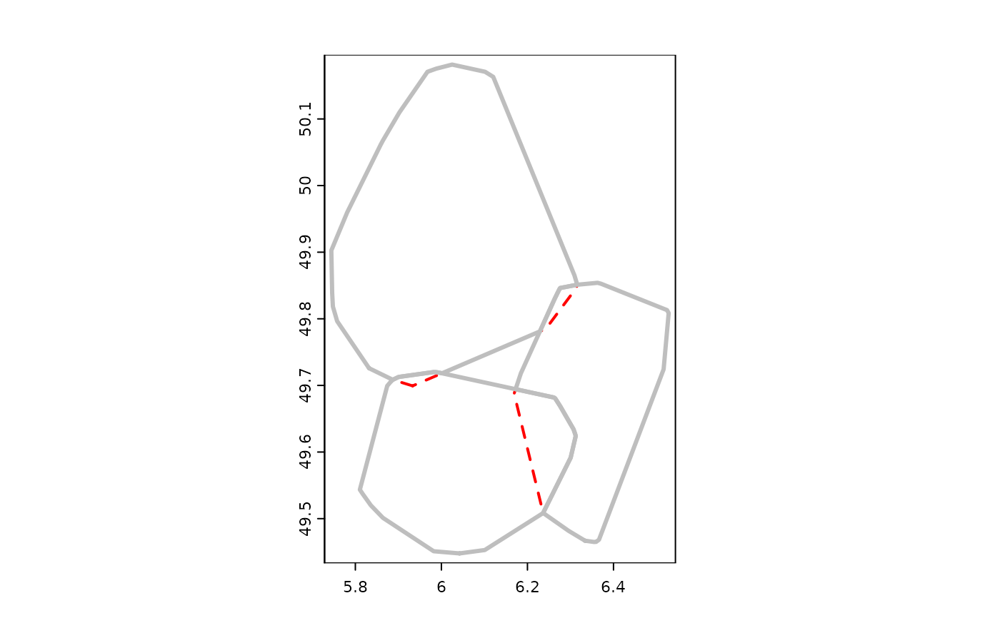
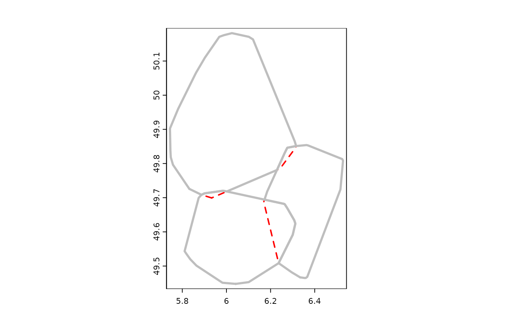

Erase parts of a SpatVector object
erase.RdErase parts of a SpatVector with another SpatVector or with a SpatExtent. You can also erase (parts of) polygons with the other polygons of the same SpatVector.
# S4 method for SpatVector,SpatVector
erase(x, y)
# S4 method for SpatVector,missing
erase(x, sequential=TRUE)
# S4 method for SpatVector,SpatExtent
erase(x, y)Arguments
- x
SpatVector
- y
SpatVector or SpatExtent
- sequential
logical. Should areas be erased sequentially? See Details
Value
SpatVector or SpatExtent
Details
If polygons are erased sequentially, everything that is covered by the first polygon is removed from all other polygons, then everything that is covered by (what is remaining of) the second polygon is removed, etc.
If polygons are not erased sequentially, all overlapping areas are erased and only the areas covered by a single geometry are returned.
Examples
f <- system.file("ex/lux.shp", package="terra")
v <- vect(f)
# polygons with polygons or extent
e <- ext(5.6, 6, 49.55, 49.7)
x <- erase(v, e)
p <- vect("POLYGON ((5.8 49.8, 6 49.9, 6.15 49.8, 6 49.6, 5.8 49.8))")
y <- erase(v, p)
# lines with polygons
lns <- as.lines(rast(v, ncol=10, nrow=10))[12:22]
eln <- erase(lns, v)
plot(v)
lines(lns, col='blue', lwd=4, lty=3)
lines(eln, col='red', lwd=2)
 ## self-erase
h <- convHull(v[-12], "NAME_1")
he <- erase(h)
plot(h, lwd=2, border="red", lty=2)
lines(he, col="gray", lwd=3)

## self-erase
h <- convHull(v[-12], "NAME_1")
he <- erase(h)
plot(h, lwd=2, border="red", lty=2)
lines(he, col="gray", lwd=3)
